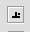
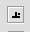

Règles
Les règles sont situées le long du haut et d'un côté de votre document. En cliquant à l'intérieur d'elles, vous pouvez ajouter des tabulations, changer les marges et l'indentation.
 

Cliquez dans le carré du coin supérieur gauche pour modifier le type de tabulation à insérer. Les symboles font référence, dans l'ordre, à la tabulation gauche, centrée, droite, décimale et à la tabulation sous forme de barre. Les tabulations décimales sont conçuent de telle sorte que le point décimal d'un nombre soit aligné en dessous d'elles. Elles sont le plus employées en comptabilité. Les tabulations en forme de barre sont des lignes verticales dans une page et agissent tout comme des tabulations gauches. Elles sont le plus employées pour dessiner des tableaux.
Les poignées en forme de petits carrés de la règle du haut ou de celle de côté, vous permettent de modifier les marges de la page. Pour changer les marges, cliquez sur les carrés et déplacez-les.
Les deux triangles qui pointent vers le haut, vous permettent de modifier l'indentation du texte par rapport aux marges. Pour déplacer ces triangles et changer l'indentation, cliquez sur les triangles et déplacez-les.
Le triangle vers le bas, vous permet de modifier l'indentation de la première ligne d'un paragraphe.
Le rectangle vous permet de modifier simultanément l'indentation gauche et l'indentation de la première ligne.
Cliquer à l'intérieur de la règle du haut crée une tabulation du type courant. Le symbole représentant le type de tabulation s'insère dans la règle à l'endroit approprié pour vous rappeler le type de tabulation.